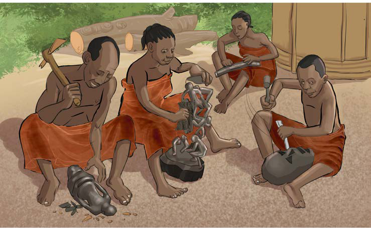

Vilevile, wachongaji walitumia miti kuchonga bidhaa kama mitumbwi, makasia na ngalawa, vyombo vilivyotumika kwa ajili ya usafiri katika maji. Bidhaa hizi zinatumika katika jamii zetu mpaka sasa. Kielelezo namba 6, kinawasilisha mfano wa mtumbwi na makasia.
Jamii hizi zilichonga vinyago vya wanyama na ndege. Pia, walichonga vinyago vyenye umbo la binadamu. Kielelezo namba 7, kinawasilisha shughuli za uchongaji.
